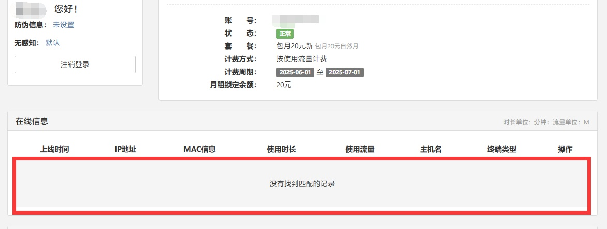
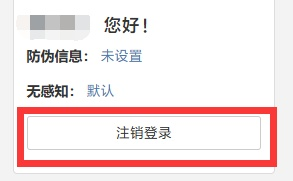
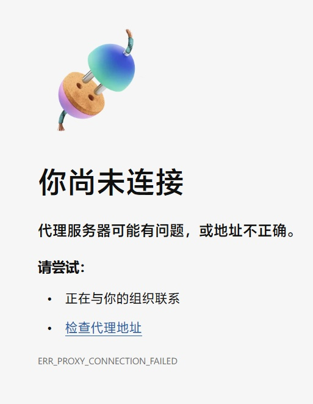
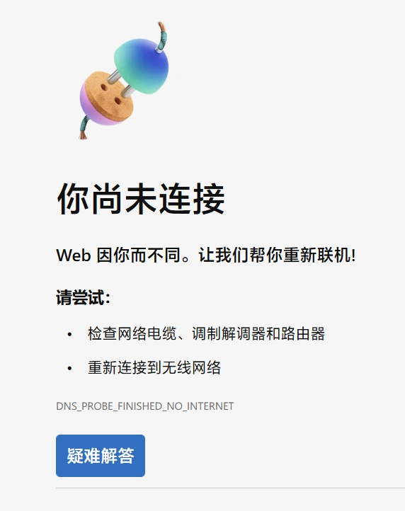
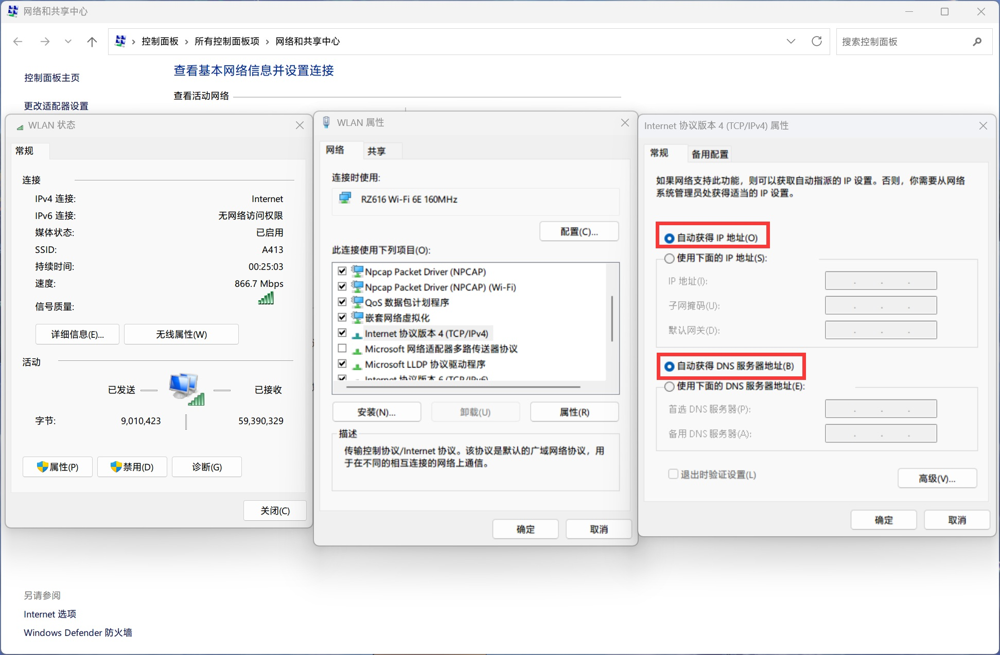

校园网常见问题
本页面内容由 NAOSI 维护，如遇到未在本页列出的问题，请联系开发区校区网络服务办公室解决。
Q: 已经登录校园网账号，但仍无法连接网络，“用户自助服务系统”中未显示当前设备在线信息，怎么办？
A: 一般是因为设备实际上未成功登录校园网，仅登录了用户自助服务系统。解决方法为：
- 法一：点击"注销登录"按钮后，访问 http://172.20.30.3/ 重新登录；
 - 法二：或直接清除浏览器 cookie 后重新登录。
手机/平板电脑等移动设备，尽量通过连接 WiFi 后系统自动弹出的登录页面进行登录，直接在手机浏览器访问 http://172.20.30.3/ 登录有可能连不上校园网。
Q: 在 http://172.20.30.3/ 点击“注销本机”按钮无法正常注销，怎么办？
A: 解决方法为，先点击“跳转登录”按钮，确保 SSO 正常登录，然后回到 http://172.20.30.3/ 点击“注销本机”按钮进行注销。如果还是不行，尝试清除浏览器 cookie 后重新登录并注销。
手机/平板电脑等移动设备，校园网在注销后若要重连，请等待 30 秒后再连接 DLUT-EDA WiFi。
Q: “用户自助服务系统”里账户余额明明不是 0 元，为什么无法上网？
A: 不要看账户余额，看可用流量还剩多少，如果还剩 0M 那就是当月流量已耗尽。想继续用只能再充钱（超出部分 1 元 1GB，充钱后流量自动入账），到下个自然月重置）。
Q: 连接了校园网但是访问不了网页，浏览器提示如图所示，怎么办？

A: 一般是因为之前使用过代理工具并且非正常关闭（比如未关闭代理就直接关机），导致 Windows 系统代理设置被修改，从而影响上网。解决办法为，重新打开代理工具然后正常关闭来恢复系统代理设置，或在 Windows 设置里搜索并运行“网络重置”然后重启电脑。
Q: 连接了校园网但是访问不了网页，浏览器提示如图所示，怎么办？
 A: 该问题是未将 DNS 设置为自动获取导致的。解决办法为，打开网络连接 -> 属性，在 IPv4 设置中，将 IP 地址和 DNS 服务器地址均设置为“自动获得”，保存即可。

Q: 为什么别人的网速可以到 ×× MB/s，我的不行？
A: 现在开发区校区校园网在有线连接时，正常情况下协商速度应为 1.0Gbps，如果不是这个数，请联系校区网络服务办公室进行报障。无线连接受限于硬件条件，网速一般不会太快，属于正常现象。
Q: 在人员密集区域（如教学楼 C-101 教室）为什么连不上校园网？
A: 当前区域的无线 AP 所能分配的 IP 地址已达上限，除非增加硬件，否则没有解决办法，等人少了就好了。
Q: 我i大工账号/校园邮箱账户/图书馆账户有问题登不上去，该向谁反映问题？
A: 开发区校区网络服务办公室仅负责校区网络维护。凡是涉及到大工公共网络资源的，都请直接联系大连理工大学网络与信息化中心（办公地点在凌水校区，联系邮箱为 its@dlut.edu.cn）。
Q: 我电信/移动/联通/广电校园卡怎么这么慢，是不是学校的问题？
A: 所谓的“校园卡”是各运营商提供的学生优惠流量卡，与大连理工大学无关。该卡无法直接使用校内网络资源，不受学校网信中心管控。遇到问题请咨询对应运营商客服。
Q: 为什么插上网线之后我的电脑就断网了？
A: 插网线后设备 MAC 地址发生变化，断网是正常现象，重新登录校园网即可。
Q: 电脑无法正常同步时间是为什么？
A: 大连理工大学校园网阻断了外部 IPv4 NTP 流量，而大工的 NTP 服务器（time.dlut.edu.cn）在校园网 IPv4 或 IPv6 连接下同步时间都是正常的。建议在电脑系统设置内更换 NTP 服务器地址为 time.dlut.edu.cn。如需在校园网环境中使用外部 NTP 服务器，需要有 IPv6 网络连接。